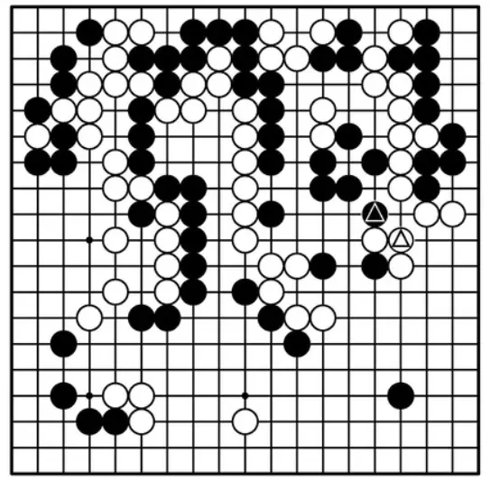
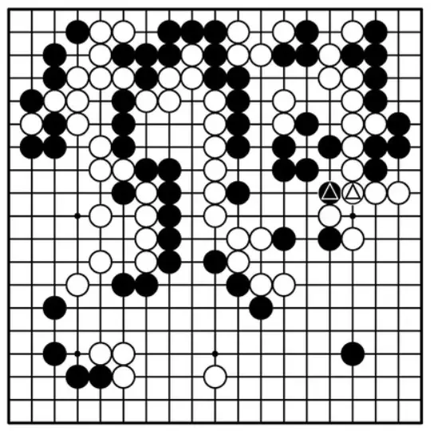
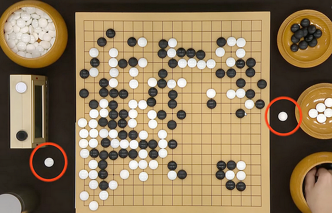

Void games because of a multiple ko or eternal life.
| 1724-04-27 | Nagano Kaizen | Inoue Shunseki | Void | sgf |
| 1838-04-13 | Sugiyama Chiyosaburo | Toya Dowa | Void | sgf |
| 1849-09-18 | Takashio Kenji | Yamaki Chinpei | Void | sgf |
| 1953-08 | Kaji Kazutame | Watanabe Hideo | Void | sgf |
| 1970-09-16 | Cho Chikun | Fukui Masaaki | Void | sgf |
| 1975-01-16 | Sugiuchi Masao | Hoshino Toshi | Void | sgf |
| 1975-07-10 | Kato Masao | Cho Chikun | Void | sgf |
| 1980-05-28 | Yanagawa Hiromasa | Matsuoka Akira | Void | sgf |
| 1997-04-15 | Lee Sedol | Lee Hyeong-ro | Void | sgf |
| 1998-10-14,15 | Cho Chikun | O Rissei | Void | sgf |
| 2002-05-09 | Yoda Norimoto | Hikosaka Naoto | Void | sgf |
| 2006-04-17 | So Yokoku | Zhu Songli | Void | sgf |
| 2008-07-17 | He Xin | Zhang Chao | Void | sgf |
| 2009-05-14 | Gao Xing | Pan Yang | Void | sgf |
| 2009-11-23 | Kim Hyeongwoo | Heo Yeongho | Void | sgf |
| 2010-08-05 | Lee Wondo | Lin Shuyang | Void | sgf |
| 2010-11-23 | Kim Yoonyoung | Yoshida Mika | Void | sgf |
| 2011-09-04 | Li Zhe | Gu Li | Void | sgf |
| 2012-04-16 | Liu Jianchang | Chen Qingyu | Void | sgf |
| 2013-08-26 | Yamashita Keigo | Kono Rin | Void | sgf |
| 2013-11-02 | Chen Yaoye | Gu Li | Void | sgf |
| 2014-08-04 | Meng Tailing | Kim Hyeongwoo | Void | sgf |
| 2015-09-20 | Shin Jinseo | Kang Yutaek | Void | sgf |
| 2017-03-07 | Park Taehee | Kim Dayoung | Void | sgf |
| 2018-05-16 | Li Qincheng | Chen Xian | Void | sgf |
| 2020-11-02 | Kang Yootaek | Na Hyun | Void | sgf |
| 2021-06-26 | Han Sanghun | Park Minkyu | Void | sgf |
| 2023-04-28 | Park Jinsol | Park Sangjin | Void | sgf |
| 2024-01-16 | Chen Yunong | Li Qincheng | Void | sgf |
| 2024-09-11 | Shin Jinseo | Lee Changho | Void | sgf |
| 1740? | Ku Shen-yi | Seng Kuan-ju | Void | sgf |
| 1963-07-04 | Hashimoto Yoshimi | Isogawa Masao | Void | sgf |
| 1963-09-16 | Kurosawa Tadanao | Kawamoto Noboru | Void | sgf |
| 1974-10-30 | Hotta Yozo | Kubo Katsuaki | Void | sgf |
| 1977-02-03 | Miyamoto Naoki | Yamabe Toshiro | Void | sgf |
| 1984-05-24 | Qian Yuping | Kataoka Satoshi | Void | sgf |
| 1985-05-28 | Awaji Shuzo | Liu Xiaoguang | Void | sgf |
| 1992-01-29 | Hoshino Masaki | Cho Shoen | Void | sgf |
| 1994-07-14 | Enda Hideki | Hane Naoki | Void | sgf |
| 1994 | Ishii Shinzo | Aragaki Shun | Void | sgf |
| 1995-04-26 | Tsurumaru Keiichi | Kawai Tetsuyuki | Void | sgf |
| 1997-03-06 | Tei Meiko | Ishida Yoshio | Void | sgf |
| 2000-04-06 | Doi Makoto | Hasegawa Sunao | Void | sgf |
| 2002-03-15 | Yu Bin | Qiu Jun | Void | sgf |
| 2004-03-27 | Yoda Norimoto | O Meien | Void | sgf |
| 2005-09-11 | Lee Changho | Chang Hao | Void | sgf |
| 2007-06-28 | Kono Rin | Akiyama Jiro | Void | sgf |
| 2009-03-08 | Lin Lixiang | Chen Shiyuan | Void | sgf |
| 2012-09-02 | Lee Jae-woong | Kim Hyen Chan | Void | sgf |
| 2012-09-05 | Gu Li | Lee Sedol | Void | sgf |
| 2013-07-23 | Wang Yuanjun | Lin Junyan | Void | sgf |
| 2014-06-05 | Lee Sedol | Jiang Weijie | Void | sgf |
| 2014-11-11 | Zhou Junxun | Chen Shiyuan | Void | sgf |
| 2015-04-09 | Mitani Tetsuya | Kono Rin | Void | sgf |
| 2015-06-25 | Wu Guangya | Huang Yunsong | Void | sgf |
| 2017-10-10 | Li Qincheng | Jiang Weijie | Void | sgf |
| 2020-08-26 | Jiang Weijie | Li Weiqing | Void | sgf |
| 2022-11-26 | Tuo Jiaxi | Kang Dongyoon | Void | sgf |
| 2023-02-10 | Gu Zihao | Park Junghwan | Void | sgf |
| 2013-06-29 | Kuboniwa Takashi | Ohashi Hirofumi | Void | sgf |
| 1989-01-28 | Kurotaki Masanori | Kono Mitsuki | Void | sgf |
| 1993-09-02 | Rin Kaiho | Komatsu Hideki | Void | sgf |
| 2003-09-28 | Takizawa Yuta | Tanaka Yasunobu | Void | sgf |
| 2009-09-14 | Uchida Shuhei | O Meien | Void | sgf |
| 2013-06-29 | An Sungjun | Choi Cheolhan | Void | sgf |
Games, forfeited because of an illegal ko recapture.
| date | black | white | result | sgf |
|---|---|---|---|---|
| 1962-04-18,19 | Kusaka Kaneo | Iwata Tatsuaki | W+F | sgf |
| 1971-06-05 | Ishida Yoshio | Kajiwara Takeo | W+F | sgf |
| 1972-12-20 | Takamizawa Tadao | Shirae Haruhiko | W+F | sgf |
| 1974-04-17 | Chen Zude | Hashimoto Yoshimi | W+F | sgf |
| 1978-04-06 | Kaji Kazutame | Hashimoto Utaro | B+F | sgf |
| 1982-09-29 | Yamamoto Masato | Kanagawa Masaaki | B+F | sgf |
| 1985-11-07 | Takemiya Masaki | Hane Yasumasa | B+F | sgf |
| 1988-10-27 | Takemiya Masaki | Kato Masao | W+F | sgf |
| 1993-06-10 | Takemiya Masaki | Kataoka Satoshi | W+F | sgf |
| 1997-12-04 | Ryu Shikun | Kudo Norio | B+F | sgf |
| 1999-04-10 | Jimmy Cha | Ishii Shinzo | B+F | sgf |
| 2006-08-14 | So Yokoku | Kim Seungjun | W+F | sgf |
| 2007-05-31 | Okuda Aya | Mannami Kana | B+F | sgf |
| 2012-09-05 | Jiang Weijie | Mi Yuting | W+F | sgf |
| 2015-06-17 | Moriyama Naoki | Ha Youngil | B+F | sgf |
| 2016-01-07 | Shida Tatsuya | Yu Zhengqi | W+F | sgf |
| 2017-12-12 | Watanabe Yu | Xu Yuqi | W+F | sgf |
| 2004-05-10 | O Meien | Kim Sujun | B+F | sgf |
White 244 took the wrong ko in a quadruple ko situation and forfeited the game.
| 1980-10-08,09 | Cho Chikun | Otake Hideo | Void | sgf |
Black 213 illegally retook the ko. Before playing it, Cho had asked the scorekeeper whether it was his turn to capture, and was told that it was. Because of this, the game was declared void.
| 2017-10-30 | Kim Jiseok | Han Yizhou | B+R | sgf |
White 34 illegally retook the ko, and W forfeited his move.
| 2014-04-18 | Zhao Chenyu | Hong Kipyo | B+1.5 | sgf |
In the game record, White 148 is illegal. The players disagreed about whether there had been a preceding ko threat, and just continued the game.
| 2003-10-02 | Cho Hunhyun | Choi Cheolhan | W+F | sgf |
| 2005-07-25 | Cho U | Cho Chikun | B+F | sgf |
In the first game, Black 105 was probably meant to take the nearby ko, but was misplaced. In the second game, White 214 was probably meant to take an imagined ko.
| 1987-10-07,08 | Kato Masao | Rin Kaiho | B+F | sgf |
Recommencing after the dinner break, White played 189 while it was not his turn, and forfeited the game.
| 2021-04-08 | Kono Yukio | Shoji Kazuko | B+F |
During the 47th Meijin Tournament Preliminary C, White played 122, and about 20 seconds later moved it up to an adjacent position. She won, but after a protest the result was reversed.
 
| 1991-08-29 | Iwata Tatsuaki | Mimura Tomoyasu | B+F | sgf |
White forgot to remove the stone captured by 206 and forfeited the game.
| 2024-03-31 | Yang Kaiwen | Byun Sangil | W+F | sgf |
Black 297 captured seven stones but he had no time to remove them all, pressed the clock (with 1 second left) with still one captured stone on the board, and forfeited the game.
| 2012-03-03 | Li Qincheng | Na Hyun | W+F | sgf |
Black thought 177 captured and he illegally removed a white stone.
| 1996-12-12 | Ohira Shuzo | Minami Yoshimi | W+F | sgf |
Black 127 captured a stone, but instead of removing that, he removed his own stone again.
| 1930-11-26..28 | Kitani Minoru | Murashima Yoshikatsu | Both lost | sgf |
| 1990-04-05 | Haruyama Isamu | Hane Yasumasa | Both lost | sgf |
In the first game, both players decided to take a break and have some sleep. That was against the rules, and it was decided that both lost.
In the second game, White played 242 at position J13 where he earlier played 46, but that stone had accidentally been moved to H13 and neither player had noticed. It was decided that both lost.
| 1928-10-10 | Takahashi Shigeyuki | Segoe Kensaku | White wins (but Black does not lose) | sgf |
See Sensei's Library.
| 1988-08-23 | Cho Hunhyun | Kobayashi Koichi | B+1⅚ | sgf |
| 1988-08-23 | Kato Masao | Fujisawa Hideyuki | W+6⅗ | sgf |
See counting (for the first Ing tournament).
Prisoners do not play a role with Chinese counting, but are important under Japanese and Korean rules. Sometimes this causes confusion.
| 2004-07-31 | Kim Kangkeun | Huang Yizhong | Void | sgf |
| 2010-08-06 | Lu Jia | Kim Eunsun | Void | sgf |
About the first game, see Sensei's Library.
In the second game there was confusion about a prisoner, with either White or Black winning by 0.5. The game was replayed and Kim won.
On 2024-11-08 the Korean Baduk Association introduced the rule that captured stones have to be placed on the lid of the container. A player who fails to do this gets a 2-point penalty the first time and loses the game the second time. This rule killed the final of the 29th LG tournament.
| 2025-01-22 | Byun Sangil | Ke Jie | B+F | sgf |
| 2025-01-23 | Ke Jie | Byun Sangil | W+F | sgf |
In the first game White failed to put a captured stone in the lid twice, and was deemed to have lost.
In the second game Black failed to put a captured stone on the lid, and a long discussion ensued during which White could continue thinking about the complicated situation. Black refused to continue the game.
